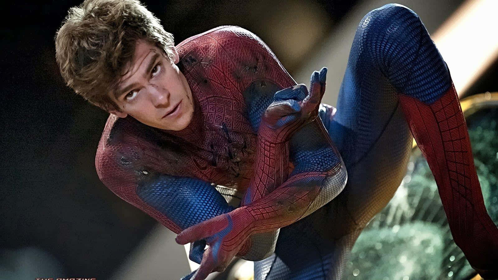
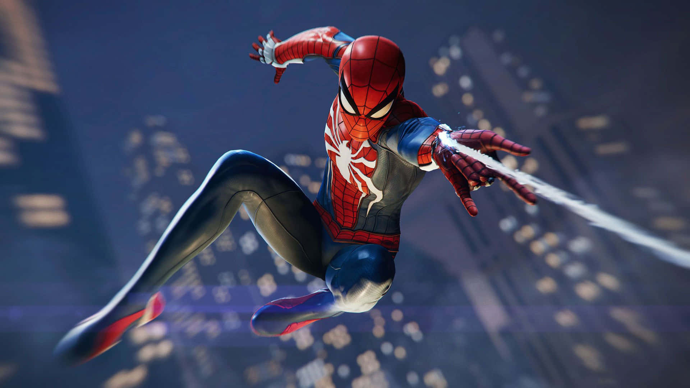

My SuperHero is SPIDER-MAN



Intro of My Hero:
- Spider-Man, Marvel's friendly neighborhood superhero, is the alter ego of Peter Parker, a teenager who gains superpowers after being bitten by a radioactive spider. With abilities like wall-crawling, super strength, agility, and spider sense, Spider-Man is a symbol of responsibility and perseverance.
- Peter’s story is marked by personal struggles, balancing his superhero duties with his everyday life. Despite facing loss and adversity, such as the tragic death of Uncle Ben, Peter embraces the mantra, “With great power comes great responsibility.”
- As Spider-Man, Peter battles iconic villains like Green Goblin, Doctor Octopus, and Venom while forming alliances with other superheroes, including the Avengers. His intelligence and resourcefulness make him a beloved hero in the Marvel Universe.
The Best Moment of Spider-Man:
One of Spider-Man's most iconic moments is in *Spider-Man: Homecoming*, where he lifts heavy rubble to escape a dangerous situation, showcasing his determination and belief in himself.
Additional moments I admire:
- Peter’s choice to reject joining the Avengers initially, emphasizing his desire to remain a grounded hero for his city.
- The emotional scene in *Spider-Man: No Way Home*, where he receives guidance from other Spider-Men, reminding him of the value of hope and teamwork.
- His battle against Doctor Octopus on the train in *Spider-Man 2*, a moment of heroism and sacrifice for the people of New York.
- Spider-Man’s iconic upside-down kiss scene, reflecting his human side and romantic struggles.
- The final swing in any Spider-Man movie, symbolizing his resolve to keep fighting for his city, no matter the challenges.
Why I Like Him:
- Spider-Man’s relatability as an ordinary teenager navigating extraordinary circumstances.
- His resilience and ability to rise above challenges, no matter how daunting they are.
- The balance between his humor, intelligence, and bravery, making him a well-rounded hero.
- His selflessness and commitment to protecting others, embodying true heroism.
If you want to see some of the best of him:
- The evolution of Spider-Man: Spider-Man Evolution
- Spider-Man vs. Doctor Octopus: Train Fight Scene
- Spider-Man’s emotional moments: Peter’s Journey
- The final swing of Spider-Man: Spider-Man's Resolve
Those Who Visited This Webpage:
Thank you for visiting this page and exploring Spider-Man's journey. His story reminds us that anyone can be a hero with courage, responsibility, and determination. As Spider-Man says, “No matter how many hits I take, I always find a way to come back.”